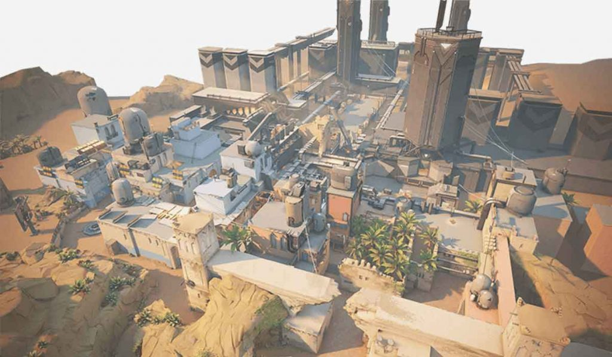
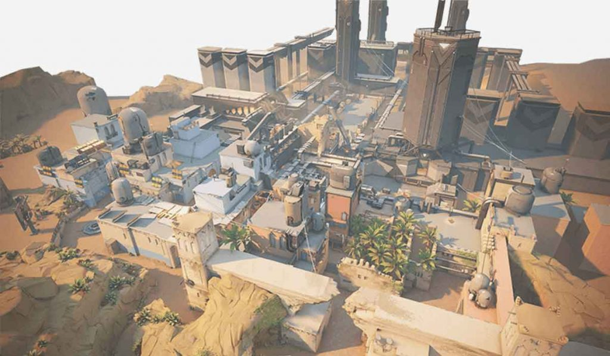

Havefun

Havefun adalah map yang memiliki 3 sisi yaitu sisi kiri, sisi tengah, dan sisi kanan, yang juga unik karena sebagian besar map lain hanya memiliki 2 sisi. Sisi A dapat diakses melalui gang yang berbentuk L yang disebut "Kebun" atau melalui gang bawah tanah yang disebut "Gang". Sisi B dapat diakses melalui Lobby tengah yang mengarah ke "Situs".dari situs juga mengarah ke satu pintu yang disebut "Garasi" yang memungkingkan penyerang untuk menuju sisi B. Sisi C dapat diakses melalui gang lurus yang disebut "Lobby kanan".
Tlips

Tlips ditambahkan dilaforant pada hari pertama setelah beta tertutup. kedua sisi dikiri dan kanan dipeta dengan sisi tengah memberikan area dataran tinggi yang unik dari map ini adalah adanya tali yang bisa membuat pemain untuk naik atau turun dengan cepat maupun pelan. Anda dapat menemukan tali tersebut di Selokan, Heaven, dan Spawn.
Blind
 

Blind adalah map yang memiliki 2 sisi yaitu sisi A dan sisi B sisi A dapat di ambil alih melalui lorong yang berada di tengah map yang disebut "A kecil" atau melalui lorong yang disebut "Bath" sisi B dapat diakses melalui 2 arah yaitu jalan sepanjang pantai yang disebut "B long" atau melalui jendela
Scenta
Scenta merupakan peta baru yang pertama yang ditambahkan sejak munculnya Laforant peta ini merupakan peta yang terinspirasi dari Venesia,Italia. Peta ini memiliki 2 sisi di setiap sisi ada pintu yang bisa dibuka atau ditutup menggunakan sakelar dan Pintu baja tersebut bisa di tembak dan menembus pintu tersebut.
@Copyright2021 Laforant Indonesia